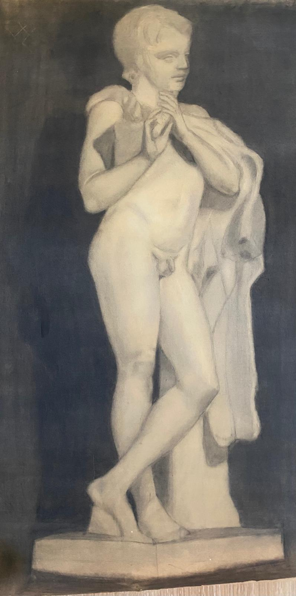
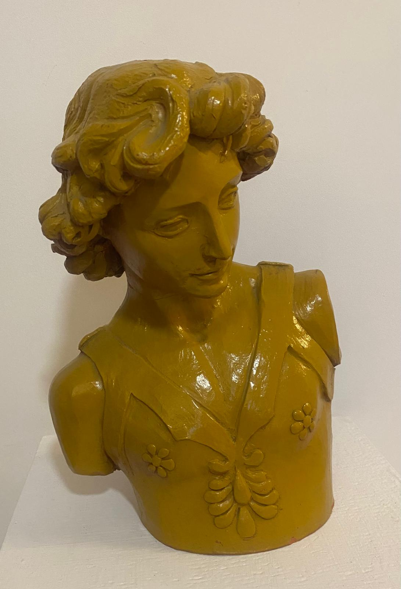
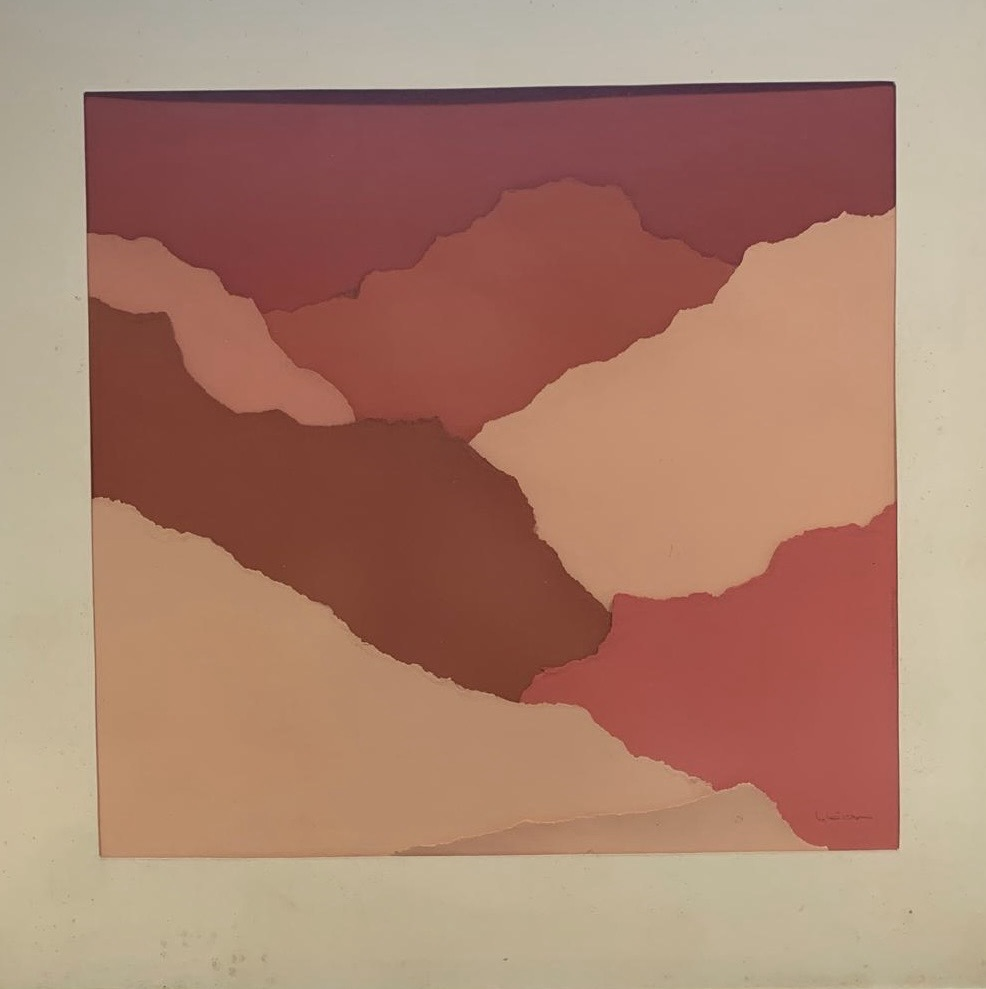
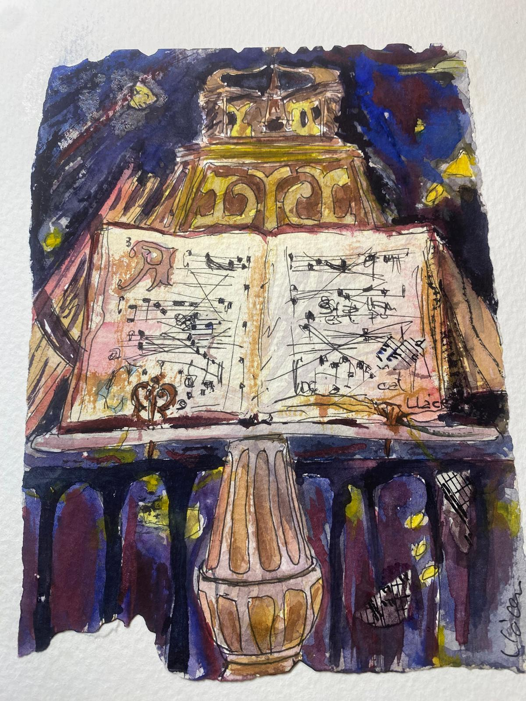

Firma artística: Pako Llácer (desde el año 2000).
Pako Llácer inicia su relación con el arte a una edad temprana. Comienza a dibujar y pintar en torno a 1965, cuando apenas contaba con trece años, mostrando ya un interés temprano por la representación artística y la observación del natural.

Realiza sus estudios de bachillerato en el Instituto Lluís Vives de Valencia, el único instituto de la ciudad en aquel momento. Influenciado por la figura de su padre, Don Paco Llácer Pla, músico, compositor y catedrático, se inclina progresivamente hacia el ámbito artístico y cultural
Entre 1965 y 1968 completando estudios de dibujo de estatua en la academia Peris Torres para prepara el examen de ingreso en la Academia Superior de Bellas Artes de San Carlos. Posteriormente amplía su formación en la Escuela de Artes y Oficios, donde profundiza en dibujo, modelado y técnicas de grabado.

Desde 1970, comienza a desarrollar de forma autodidacta estudios sobre las distintas formas de ver el espacio sobre papel, lienzo y otros materiales influenciado por las corrientes artísticas del momento consolidando una forma de expresión.
Paralelamente a su actividad artística, en 1975 ingresa por oposición en la Caja de Ahorro Valencia, entre sus destinos, la tuvo la gestión de BANCARTE, subasta de obras de arte (en el marco del Monte de Piedad y Bancarte. Esta experiencia le permite un contacto directo y continuado con el mercado artístico y con distintas manifestaciones.
Su obra está profundamente marcada por diversas influencias. Destaca la figura de su padre, Don Paco Llácer Pla, reconocido por su carácter abierto y conciliador, así como por su sólida trayectoria musical. También resulta clave la relación con Joaquín Michavila, pintor y profesor, amigo cercano de la familia, con quien estudia dibujo del desnudo en el Círculo de Bellas Artes de Valencia.
Asimismo, las vanguardias artísticas del siglo XX influyen decisivamente en su evolución, hasta conducirle a la construcción de un lenguaje propio.

A lo largo de su trayectoria, Pako Llácer atraviesa diversas etapas creativas:
Especial relevancia adquiere la serie “El Árbol”, con la que consolida definitivamente su estilo personal. A través de ella, el artista desarrolla una reflexión estética y ética vinculada a la naturaleza y la denuncia de los incendios forestales.
Ha realizado diversas exposiciones individuales, entre ellas en el Centro Excursionista de Valencia, el Café Ordago, Galería La Nave 2, Ka Revolta, Palacio de Paterna (explosicion colectiva), Certamen Caja de Ahorros de Onteniente, Galería María del Pilar de Cuenca (Grabados Colectica Alumnos de Grabado Artes y Oficios de Valencia, Galería Anagma, junto con el Escultor José L Yebra, Fundación Bancaja cuadro adquirido para la oficina n 64 de la misma Entidad. Asimismo, ha participado en certámenes, Elda Concurso Mini Cuadros, Feria del Mueble de Valencia, Carátula CD Anversario Banda de Música Ateneo Musical del Puerto ( decoración con cuadros alegóricos a la Música en la nueva Sede de la misma Entidad) otros eventos :
Estreno Obra de D Paco Llacer TENEBRAE.( portada programa)
Conservatorio Superior de Música de Valencia.

Ya jubilado, Pako Llácer continúa investigando y creando. Retoma la abstracción conceptual, explora la acuarela de manchas y desarrolla nuevas series centradas en árboles y rostros de mujeres, algunas de ellas con una clara intención reivindicativa y social.